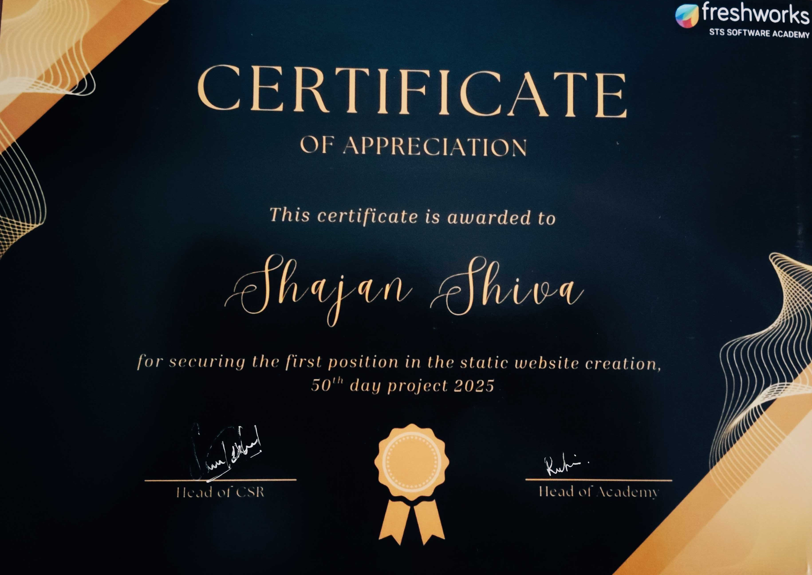

ABOUT ME
I'm Shajan, a Full Stack Developer based in Chennai who enjoys turning ideas into real-world applications. My journey into software development began with a curiosity about how technology works, and that curiosity continues to drive me every day.
After completing the Software Development Program at Freshworks STS Software Academy, I gained professional experience at Zerberus.ai, where I worked on building backend services and production-ready features. These experiences strengthened my understanding of software engineering and reinforced my passion for creating reliable, scalable, and user-focused applications.
Today, I continue exploring new technologies, taking on challenging projects, and building software that solves real-world problems. My goal is to keep learning, grow as an engineer, and create technology that makes a meaningful impact.